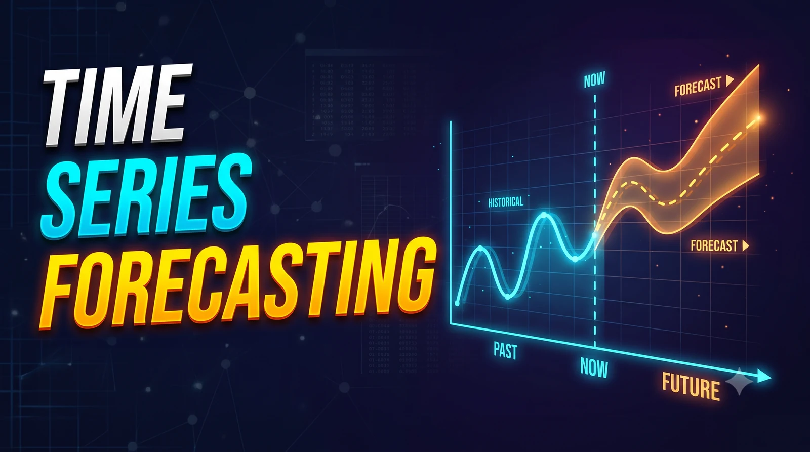

PROJECT / 01

TIME SERIES · FORECASTING
Time Series Forecasting
Forecasts Walmart weekly sales with statistical and machine-learning models. Project materials report 1.31% MAPE on a 12-week company-wide holdout.